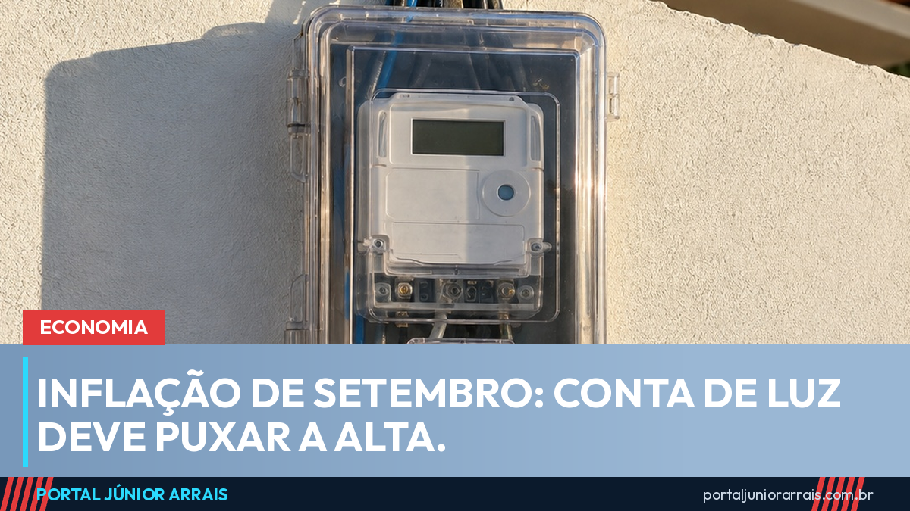

Inflação de setembro sai sexta: conta de luz deve puxar alta e pesa no reajuste do INSS

O IBGE divulga na sexta-feira, 9 de outubro, às 9h, a inflação oficial de setembro (IPCA) e o INPC, o índice que corrige as aposentadorias e pensões do INSS acima do salário mínimo. Depois de um agosto negativo, a expectativa é de alta, e o motivo principal está na conta de luz.
O que a prévia já mostrou
A prévia da inflação de setembro, o IPCA-15, subiu 0,70%, a maior taxa desde abril, e levou o acumulado em 12 meses a 4,47%. A energia elétrica ficou 7,42% mais cara. A explicação é o fim do Bônus de Itaipu: o desconto que derrubou a conta em agosto não se repetiu em setembro, e a fatura voltou ao valor normal. Sem a luz, a prévia teria ficado perto de 0,41%.
Também subiram as passagens aéreas (9,82%), o tomate (20,76%) e o arroz (2,39%).
O que esperam para sexta
Bancos projetam alta entre 0,75% e 0,79% no IPCA de setembro, segundo a agenda econômica da semana. Com isso, o acumulado em 12 meses passaria de 4,2% para cerca de 4,5%. No boletim Focus desta segunda, o mercado elevou a previsão de inflação para 2026 para 5,01%.
O que isso muda no reajuste do INSS
Quem recebe acima do salário mínimo tem o benefício corrigido em janeiro pelo INPC acumulado de janeiro a dezembro. Até agosto, o índice somava 3,17% no ano, como o portal mostrou na matéria sobre a inflação de agosto. Um setembro mais alto aumenta essa conta, e o reajuste de 2027 tende a ser maior.
Quem recebe o piso, incluindo o BPC, depende do reajuste do salário mínimo, que considera o INPC de 12 meses e o crescimento da economia de dois anos antes, dentro do limite das regras fiscais. O governo projeta R$ 1.741 para 2027, conforme a proposta de orçamento. O número final só sai no fim do ano.
E a conta de luz de outubro?
Para outubro, a bandeira tarifária é verde, sem cobrança extra, como o portal informou ao explicar a bandeira de outubro. Isso ajuda a segurar a próxima fatura, mas não desfaz a alta registrada em setembro.
Cuidado com golpe
Em mês de inflação no noticiário, circulam mensagens prometendo "revisão do reajuste do INSS" ou "devolução da diferença da conta de luz" mediante pagamento antecipado. Reajuste de benefício e desconto na conta de luz não dependem de taxa, link ou cadastro em site desconhecido.
Se o valor do seu benefício não bate com o que deveria ser depois do reajuste, procure um profissional de sua confiança para conferir o cálculo.
Conteúdo informativo — não substitui orientação individualizada sobre o seu caso.
Júnior Arrais · Editor do Portal Júnior Arrais
Comunicador de Ubá (MG). Escreve todos os dias sobre benefícios sociais, INSS, trabalho e economia do dia a dia, a partir do Diário Oficial, de portarias e de fontes oficiais, em linguagem simples. Conheça a linha editorial e a política de correções do portal.